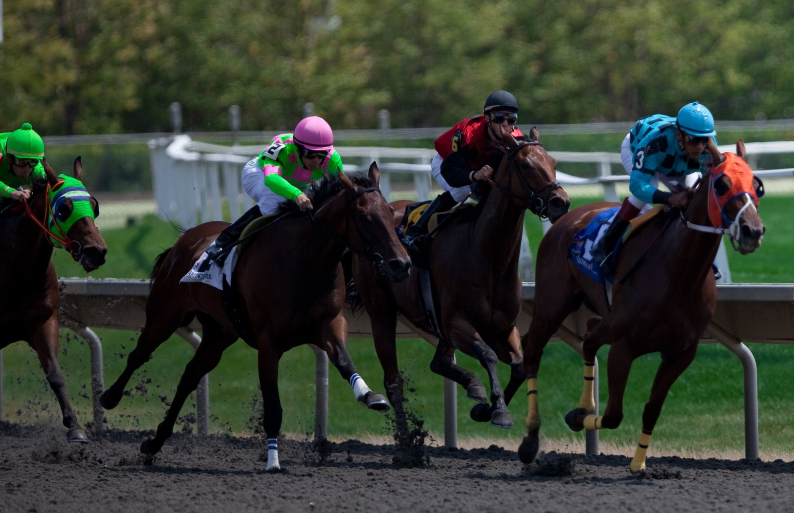

Mount Atlas, un Grupo I criado y preparado en casa por los Balding en Ascot
Mount Atlas, que partía como outsider, se impuso en el primer Grupo I del British Champions Day de Ascot. Lo prepara Andrew Balding y lo crió su madre, Emma.

La carrera se resolvió en un hueco que apenas existía. Por ahí se metió Mount Atlas para ganar su primer Grupo I y dar a Park House Stables, en Kingsclere, una victoria que se había empezado a gestar décadas antes de su nacimiento.
Es hijo de Masar, un semental lejos de la moda, y de Highland Pass, por Passing Glance. Highland Pass es media hermana de Elm Park, otro ganador de Grupo I salido de Kingsclere. Las cinco primeras madres de su línea las criaron Emma Balding o su difunto marido, Ian. Passing Glance también se preparó en esa cuadra. La lectura es sencilla: es un caballo que pocos habrían pujado en una venta de yearlings y que ha acabado ganando en Ascot.
Corrió con los colores que en su día lucieron Mill Reef y Silly Season, pertenecientes en origen a Paul Mellon.
Su criadora no estaba en el hipódromo. Emma Balding, de 77 años, perdió este año a su marido y acaba de pasar varias semanas revisando miles de yearlings con el equipo que selecciona la próxima remesa de la cuadra. El sábado estaba viendo jugar al hockey a su nieta Flora, mientras Andrew y su mujer, Anna Lisa, atendían en Ascot a los participantes de Grupo I.
La estadística del preparador sigue pendiente. Minnie Hauk, de Aidan O'Brien, ganó las British Champions Fillies and Mares Stakes y complica el asalto de Balding al título de entrenadores, que no se decidirá hasta el último día de 2026. La montó Ryan Moore, que 90 minutos antes había ingresado en el British Horseracing Hall of Fame.
Ese mismo día se entregaron otros títulos. Billy Loughnane, de 20 años, se proclamó campeón de jockeys por primera vez y relevó a Oisin Murphy, que suma cinco. Jack Callan, de 19, fue campeón de aprendices con un trofeo dedicado a Tommie Jakes, fallecido en octubre pasado a los 19 años. Su hermano Henry ganó el título de amateurs. Godolphin se llevó el de propietarios por 18ª vez, después de ganar las Queen Elizabeth II Stakes con Talk Of New York y las Champion Stakes con Ombudsman.
Fichas: Jack (caballo)
Por Martín Larrañeta